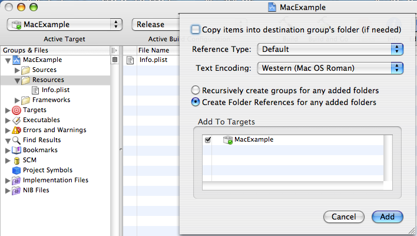

Q:
How do I place a folder of resource files into the package contents of my executable code, rather than individual references to each file in the folder?
A: To add a folder of resources to your project, you drag the folder into the Resources folder under Groups & Files. After the folder is added to the project an alert sheet drops into the window. The sheet has two radio buttons that control the placement and representation of the folder in your package's contents:
Recursively create groups for any added folders, and
Create Folder References for any added folders
Xcode defaults to the first choice, which creates a file reference for each file in the folder at the root of your package's content directory. You want to select the Create Folder References for any added folders button, as shown in figure 1. This selection creates a single reference to the folder that mirrors the layout of the folder from the filesystem - it creates a single folder within the package contents of your executable code. For a more in-depth exploration of this topic, please see the Xcode User Guide documentation for adding files to your project.
Figure 1: Adding a folder that will remain intact to the resources of a project.

Document Revision History
| Date |
Notes |
| 2006-10-31 |
First Version |
Posted: 2006-10-31
|